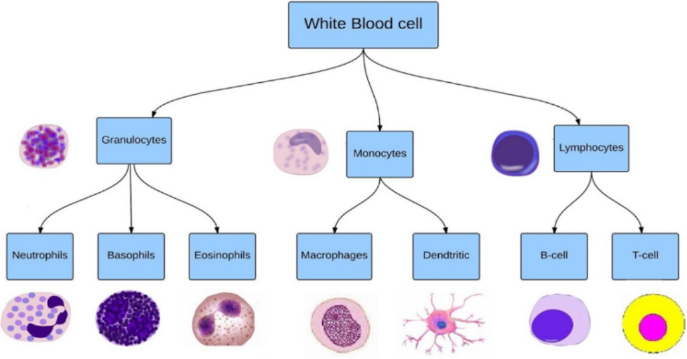
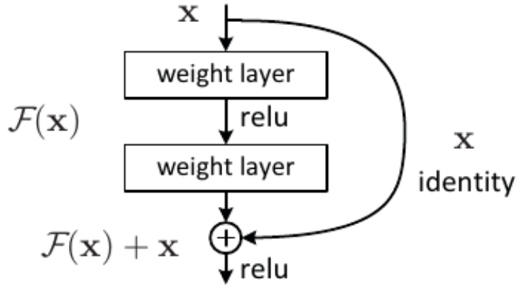
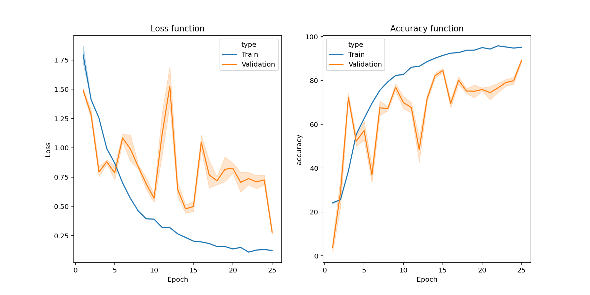
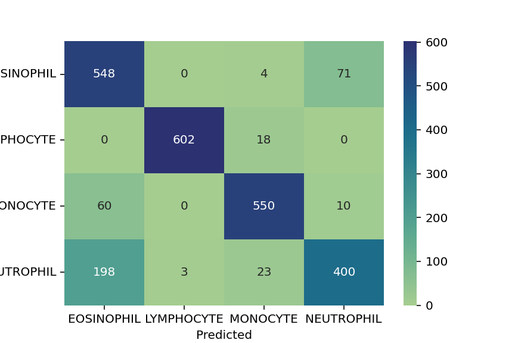
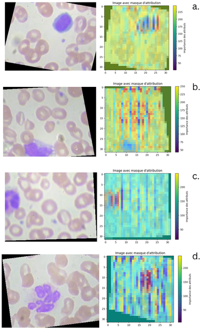

White Blood Cells (WBC) classification using Pytorch
2025
Auteurs: Jhodi
Introduction
La classification des cellules est une tâche cruciale en biologie et en médecine, permettant d’analyser des échantillons biologiques et de diagnostiquer diverses conditions. En hématologie, par exemple, elle permet d’évaluer l’état de santé des patients. Cependant, les méthodes couramment utilisées, telles que la cytométrie en flux et la microscopie, génèrent de grandes marges d’erreur. Pour pallier ces problèmes, des modèles utilisant des réseaux de neurones convolutionnels (CNN) sont de plus en plus employés [1]. Dans ce rapport, nous présentons une implémentation d’un CNN basé sur l’architecture ResNet, à l’aide de la librairie PyTorch, pour classer des cellules en quatre catégories : éosinophiles, lymphocytes, monocytes et neutrophiles. Nous examinerons plusieurs variantes de ResNet (ResNet18, ResNet34, ResNet50, ResNet101 et ResNet152) afin d’évaluer leur performance sur ce problème de classification.
Etat de l’art
Les cellules présentent de nombreuses hétérogénéités en termes de phénotype, tels qu’une différence de forme, de taille ou de localisation de certaines protéines dans les compartiments subcellulaires. Cette hétérogénéité est d’autant plus grande quand on considère la différence dans la réponse aux conditions du milieux de culture ou de développement. En effet, des cellules issues d’une même lignée peuvent suivre une évolution différente au cours de leur développement tout en gardant des similitudes, on parle alors de pluripotence. Les cellules du système immunitaire illustrent bien ce phénomène (fig 1), ce qu’on appelle communément globules blancs sont des cellules Neutrophils, Basophils, Eosinophils, Macrophages, Dendritiques, B-lymphocytes et T-lymphocyte qui sont issue des Granulocytes, Monocytes et Lymphocytes et qui sont eux-même issue d’un seul et même type cellulaire [1]. Dans ce contexte, l’automatisation de la classification cellulaire (plus couramment appelé classification cellulaire) par des approches computationnelles ont permis de décoder des processus biologiques complexes, comme en pathologie, de nombreuses recherches ont permis d’améliorer la détection de cellules cancéreuses [2].

Plus largement dans le contexte de l’imagerie cellulaire il existe trois catégories d’algorithmes de classification d’images, l’extraction de features et machine learning, les réseaux de neurones (NNs) et transport based morphometry (TBM)
Extraction de features et machine learning Une méthode utilisée depuis des années de façon manuelle ou automatisée. Les features ainsi que les classes sont extraites et sélectionnées à la main par des experts et données à des algorithmes tel que l’ ADL (analyse discriminante linéaire) ou le Random Forest. [3, 4]
Réseaux de neurones Les NNs, dont notamment les réseaux de neurones convolutifs (CNN), passe l’étape de la collection de features et utilise un réseau intriqué de neurones et de masques de convolution pour extraire les caractères de chaque image et séparer les classes. Ils surpassent la précédente méthode notamment dans des cas faisant intervenir de grandes quantités de données [3, 5].
Transport based morphometry Il s’agit d’une technique de modélisation non linéaire et d’extraction de caractéristiques qui utilise les mathématiques du transport optimal. Les techniques de modélisation linéaire (PCA, LDA, etc.) ont tendance à comparer les valeurs de données à des coordonnées fixes. Les modèles TBM, en revanche, comparent les données d’image en tenant compte à la fois des informations d’intensité et de localisation. Étant donné que le transport de masse est un processus biophysique que les cellules sont connues pour utiliser, les approches TBM ont tendance à être davantage liées aux modèles constitutifs des cellules [3].
Dans le reste de ce rapport, nous nous intéresserons uniquement qu’aux CNNs, plus précisément à l’architecture ResNet (Residual networks).
ResNet, ou Residual Network, est une architecture de réseau de neurones profonds introduite par Kaiming He et ses collègues dans un article publié en 2015 [6]. Elle a été conçue pour faciliter l’entraînement de réseaux très profonds, pouvant contenir des centaines ou des milliers de couches. La principale innovation de ResNet est l’utilisation de “blocs résiduels” (fig 2 ). Dans un bloc résiduel, la sortie d’une couche est ajoutée à l’entrée de cette couche, ce qui permet de créer des ” chemins de contournement ” (skip connections). Cela aide à résoudre le problème de la dégradation des performances qui se produit souvent lorsque l’on augmente la profondeur des réseaux de neurones. En permettant aux gradients de circuler plus facilement lors de la rétropropagation, les blocs résiduels facilitent l’apprentissage et améliorent la convergence.

Méthodologie
Description des Données
Les données d’entraînement sont composées d’un total de 9961 images ( de dimension 320 par 360 au format .jpeg) de microscopie cellulaire de cellules Éosinophiles, Lymphocytes, Monocyte et Neutrophil, tous équitablement répartie. Les cellules d’intérêt semblent avoir été traitées par un agent de contraste pour mettre en évidence leur compartiment subcellulaire et les différencier des hématies. Les images ont pour la plupart été décalées, afin d’augmenter la quantité de données à analyser.
Implémentation des Modèles
Les modèles ResNet reposent sur une architecture résiduelle qui permet de construire des réseaux de neurones très profonds tout en atténuant le problème de la dégradation des performances. Cette approche utilise des blocs résiduels, tels que BasicBlock et Bottleneck, pour faciliter la propagation des gradients à travers les couches et des convolutions 3x3 pour capturer des motifs locaux tout en maintenant une taille de paramètre raisonnable. 1. Architecture Résiduelle L’utilisation de BasicBlock et Bottleneck permet de créer des réseaux très profonds tout en atténuant le problème de la dégradation des performances. Par exemple, dans la classe BasicBlock, la méthode forward utilise une connexion de contournement (out += self.shortcut(x)) qui permet de transmettre directement les informations d’entrée à la sortie. 2. Convolutions et Normalisation Les couches de convolution avec un noyau de 3x3, comme celles définies par self.conv1 et self.conv2 dans BasicBlock, sont standard dans les architectures modernes. Elles permettent de capturer des motifs locaux tout en maintenant une taille de paramètre raisonnable et permet de gérer la variabilité des données. 3. Facteur d’Expansion Le choix entre BasicBlock et Bottleneck dépend de la profondeur du réseau. Par exemple, dans la classe Bottleneck, le facteur d’expansion est défini comme self.expansion = 4, ce qui signifie que le nombre de canaux de sortie est multiplié par 4 après le traitement. Cela permet de réduire le nombre de paramètres tout en maintenant une capacité d’apprentissage élevée.
- Stratégie de Stride L’utilisation de stride dans les convolutions, comme dans self.conv2 de BasicBlock, permet de réduire progressivement la taille des caractéristiques tout en augmentant le nombre de canaux. Par exemple, dans la méthode _make_layer, les strides sont définis comme strides = [stride] + [1]*(num_blocks-1), ce qui permet d’appliquer un pas différent pour la première couche d’un bloc et de conserver la taille pour les suivantes. Cela aide à capturer des informations à différentes échelles.
- Couche Linéaire Finale La couche linéaire finale, définie par self.linear = nn.Linear(512*block.expansion, num_classes), est conçue pour produire des sorties correspondant au nombre de classes de globules blancs que vous souhaitez classifier. Le choix du nombre de classes (par exemple, 10 dans l’exemple) doit être aligné avec les catégories spécifiques de globules blancs que vous ciblez. Cela permet de transformer les caractéristiques extraites par le réseau en prédictions de classes.
- Variantes de ResNet Choix de la Profondeur : Les fonctions ResNet18, ResNet34, ResNet50, etc., permettent de choisir la profondeur du modèle en fonction de la complexité de la tâche et de la quantité de données disponibles. Par exemple, def ResNet50(): return ResNet(Bottleneck, [3, 4, 6, 3]) Cette fonction indique que ce modèle utilise des blocs de type Bottleneck avec une profondeur suffisante pour capturer des caractéristiques complexes.
Entraînement des Modèles
Prétraitement
Avant d’entraîner les différents modèles on commence par implémenter deux fonctions de transformation transform_train et transform_test qui ne prendrons pas les même paramètres mais auront en commun transforms.Resize() qui modifie la taille des images donnée en entrée, transforms.ToTensor() qui converti les images en tensor, et transforms.Normalize qui normalise les images. Il est nécessaire de modifier la taille mais aussi le ratio des images pour qu’elles s’intègrent mieux dans le réseau et pour que nos batchs ne sature pas la mémoire. transforms.Resize prend ici comme paramètre 32, car au-delà de cette taille, la mémoire sature intégralement. Pour augmenter les données d’entraînement, transform_train prend comme paramêtre transforms.ColorJitter(brightness=0.5) qui modifie aléatoirement la luminosité à plus ou moins 50 %, transforms.RandomVerticalFlip() et transforms.RandomHorizontalFlip() retournent verticalement et horizontalement les images.
Choix des hyperparamètres
D’autres analyses ont montré que dans la configuration actuelle, nos modèles ont tendances à rapidement overfiter. Avec un batch size de 32, le overfit apparaît dès 7 ou 10 epochs, idem avec un batch de 128 (Annex 1). Pour des raisons d’optimisation et de temps de calcul on fixe le batch size à 64 et le nombre d’epochs à 25.
Nous utilisons la descente de gradient optimizer = optim.SGD() pour accélérer la convergence et à éviter les minima locaux et l’utilisation de scheduler = torch.optim.lr_scheduler.CosineAnnealingLR(optimizer, T_max=200) permet d’ajuster dynamiquement le taux d’apprentissage pendant l’entraînement.
Analyse des Modèles
Evaluation des Performances
Evolution de la loss et de l’accuracy Les modèles évalués ne sont pas tous similaires en performance mais on peut dans un premier temps noter que ResNet18 et ResNet34 semblent être les mieux adaptés dans le contexte de la classification cellulaire, avec une accuracy de respectivement 87,45 % et 84,32 %. ResNet50, ResNet101 et ResNet152 peine à apprendre correctement et stagnent autour de 25 % d’accuracy sans amélioration notable après seulement 3 epoches (fig 3) (Annex 2, 3, 4 et 5). En contratre ResNet18 et ResNet34 atteignent les 80 % d’accuracy en seulement 10 epochs avant de commencer à surapprendre.
Précision des modèles La classe la mieux représentée est celle des Lymphocytes, avec une accuracy de plus de 99 % pour l’ensemble des modèles à l’exception de ResNet101 (tab 1). A noter que ResNet18 a la précession la mieux répartie (fig 4).
| Classe | ResNet18 | ResNet34 | ResNet50 | ResNet101 | ResNet152 |
|---|---|---|---|---|---|
| Éosinophile | 79.78 | 83.63 | 0 | 100 | 0 |
| Lymphocyte | 99.36 | 99.84 | 100 | 0 | 100 |
| Monocyte | 87.90 | 69.19 | 0 | 0 | 0 |
| Neutrophil | 82.85 | 80.45 | 0 | 0 | 0 |
tab 1 : Accuracy (%) pour chaque classe des différents modèles


Analyse des pixels
Avec l’augmentation de la complexité des modèles, il devient difficile d’interpréter les résultats en sortie, surtout pour répondre à comment et pourquoi un modèle a pris ces décisions. Des méthodes d’attribution de pixels, telles que les Integrated Gradients, permettent d’identifier les pixels d’une image qui ont le plus contribué à la prédiction d’un modèle. Le package Captum fournit tous les outils nécessaires à la réalisation de cette tâche. On peut alors remarquer que le modèle ResNet18 arrive dans les exemples données (fig 5) à reconnaitre les globules blanc cependant dans le cas des Éosinophile et Lymphocyte, le modèle tend à trop considérer l’ensemble de l’image plutot que le sujet. Cette tendance peut indiquer que le modèle n’a pas suffisamment appris à discriminer les détails pertinents des Éosinophiles et des Lymphocytes, ce qui pourrait être dû au redimensionnement de l’image.

Discussion et conclusion
En somme, nous avons développé un modèle entraîné avec une accuracy de plus de 87 %, capable de distinguer les Éosinophiles, Lymphocytes, Monocytes et Neutrophiles, avec un entraînement relativement court de seulement 10 epochs. L’analyse comparative a révélé que, dans le domaine de la classification cellulaire, ResNet18 et ResNet34 semblent mieux adaptés que ResNet50, ResNet101 et ResNet152. Cependant, ResNet18 pourrait être influencé par des caractéristiques non spécifiques aux globules blancs, ce qui pourrait être attribué à la faible résolution des images ou à un nombre insuffisant d’images d’entraînement. Malgré cela, l’accuracy des classes est relativement bien équilibrée, bien que les modèles ResNet18 et ResNet34 présentent un biais marqué en faveur des Lymphocytes (accuracy > 99 %). Pour de futurs travaux, il serait intéressant d’explorer des modifications architecturales pour mieux adapter les modèles à la question biologique, ainsi que d’expérimenter avec d’autres architectures ou des modèles pré-entraînés. De plus, tester les modèles avec un prétraitement d’image plus doux pourrait améliorer la visualisation des structures subcellulaires des globules blancs, bien que cela nécessite un équipement de meilleure qualité. Enfin, l’augmentation des données pourrait également être une stratégie efficace pour renforcer la robustesse du modèle.
Bibliographie :
- Al-Dulaimi, Khamael Abbas Khudhair, Banks, Jasmine, Chandran, Vinod, Tomeo-Reyes, Inmaculada, & Nguyen Thanh, Kien (2018) Classification of white blood cell types from microscope images:Techniques and challenges. In Mendez-Vilas, A & Torres-Hergueta, E (Eds.) Microscopy science: Last approaches on educational programs and applied research (Microscopy Book Series, 8)
- Simon, I., Pound, C.R., Partin, A.W., Clemens, J.Q. and Christens-Barry, W.A. (1998), Automated image analysis system for detecting boundaries of live prostate cancer cells. Cytometry, 31: 287-294. https://doi.org/10.1002/(SICI)1097-0320(19980401)31:4
- Shifat-E-Rabbi, M., Yin, X., Fitzgerald, C.E. and Rohde, G.K. (2020), Cell Image Classification: A Comparative Overview. Cytometry, 97: 347-362. https://doi.org/10.1002/cyto.a.23984
- M. Sheykhmousa, M. Mahdianpari, H. Ghanbari, F. Mohammadimanesh, P. Ghamisi and S. Homayouni, “Support Vector Machine Versus Random Forest for Remote Sensing Image Classification: A Meta-Analysis and Systematic Review,” in IEEE Journal of Selected Topics in Applied Earth Observations and Remote Sensing, vol. 13, pp. 6308-6325, 2020, doi: 10.1109/JSTARS.2020.3026724.
- Chen, L.; Li, S.; Bai, Q.; Yang, J.; Jiang, S.; Miao, Y. Review of Image Classification Algorithms Based on Convolutional Neural Networks. Remote Sens. 2021, 13, 4712. https://doi.org/10.3390/rs13224712
- Kaiming He, Xiangyu Zhang, Shaoqing Ren, Jian Sun. Deep Residual Learning for Image Recognition. https://doi.org/10.48550/arXiv.1512.03385